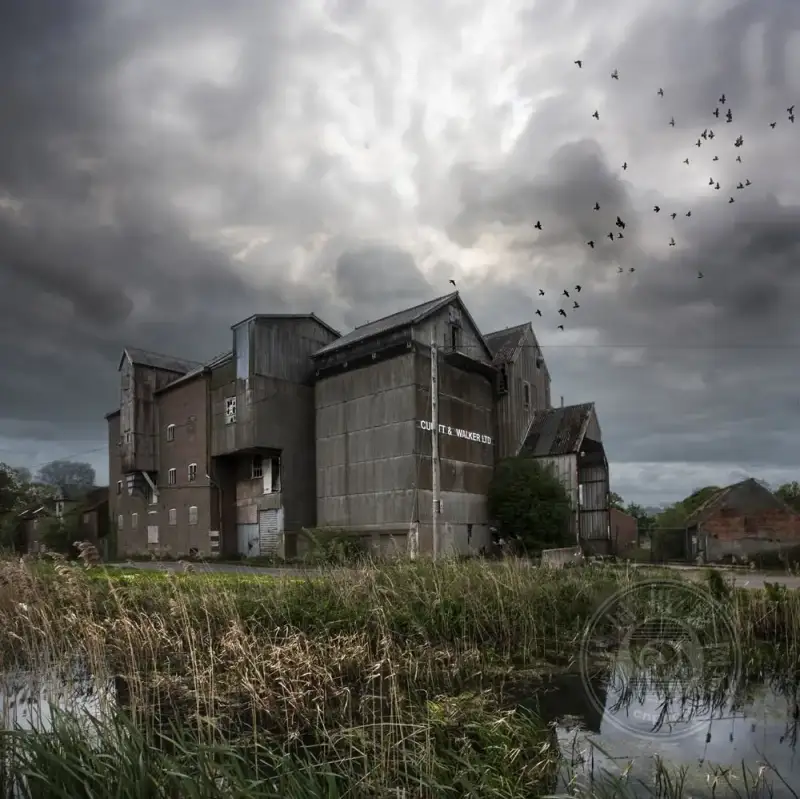
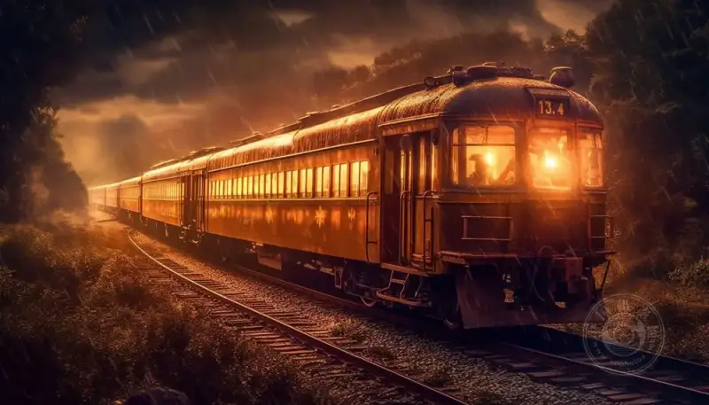

People love drama because it adds strong excitement to what is before their eyes, sparks the imagination, and takes us into a wider world. Compared with film or TV, a still photo seems harder to make dramatic. But for that reason, a tense photo hits harder. When your photo has drama, the viewer connects with it more easily.
So how do you do it? Here are 5 tips to shoot an emotional and compelling story with photos.
1. Build a scene that stirs emotion.
Some images strike the heart at once. For example, a child stands alone in an empty parking lot. Is he lost? Abandoned? Are his parents nearby? One photo, without a single word, can raise a chain of questions and images.
A strongly dramatic photo is usually more memorable. When you build a scene, ask yourself: can this frame tell a good story? Whether it is fear, curiosity, or excitement, if it touches the viewer's emotion, your photo is already half a success.
2. Use darkness to build mystery.
Darkness is a sharp tool for dramatic tension. By limiting the light, you create deep shadows, so the viewer cannot see the details hidden in the dark, and their curiosity and imagination wake up.
But note, simply shooting dark is not enough. You need light to set off the dark, so the subject stands out in the contrast. By day, use the shadow of trees or buildings. By night, use street lamps, lamps, and other artificial light sources to build layered light-dark contrast. This contrast itself is part of the drama.

3. Catch motion to make the frame come alive.
Motion is the key that gives a photo life. Whether it is the hurried steps of a person on the street, or a woman jogging in a landscape, moving elements lead the viewer to imagine: where is this person going? What is their story?
The thoughts that motion raises are the source of a photo's drama. One tip: first record the moving moment you want on video, then pull a single frame from the video, and pick the most tense frame as your final work.

4. Use scale contrast for visual impact.
Want the subject to look grand and huge, or small and alone? The key is a reference object. For example, to shoot the might of a tree, just place a person beside it. With both in frame, the tree's size speaks for itself. The person here is the ruler in the viewer's mind.
In reverse, if you want to show smallness and loneliness, leave a large empty space (negative space) around the subject. For example, shoot a person in a wide open field from far away, with nothing around. That sense of isolation comes straight at you.
5. Use shadows and silhouettes to strengthen emotion.
A silhouette is a highly dramatic method. The subject is dark, the background bright, the outline clear, the emotion full. Compared with a same-looking front portrait, a photo with shadow or silhouette usually has more tension.
The trick for a silhouette is simple. Let the subject stand in front of the light source, focus on the subject, and lower the exposure compensation a little. The subject then turns dark and sharp against the bright background, and the drama rises at once.
In closing
Adding drama to a photo is not a show of skill. It makes your work warmer and more memorable. When you tell a tense story through the frame, the viewer moves closer to your work in feeling, and remembers it more easily.
Try these 5 tips in your next shoot. Your photos can become a story that moves the heart.